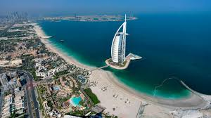
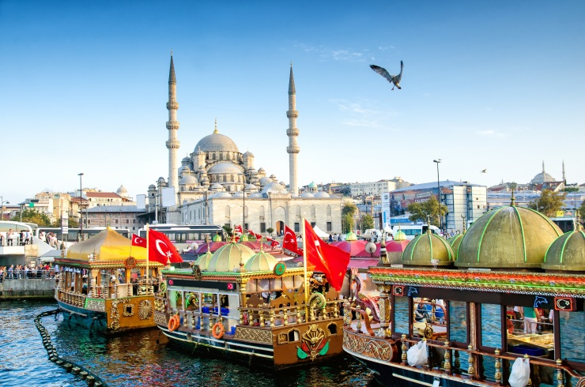
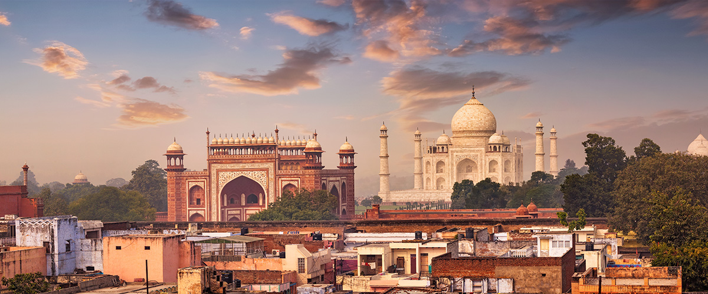
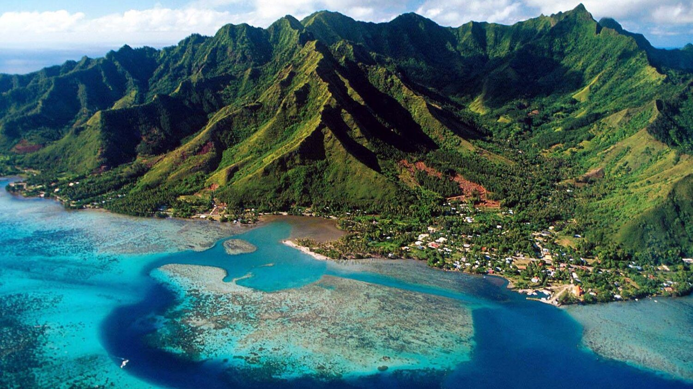
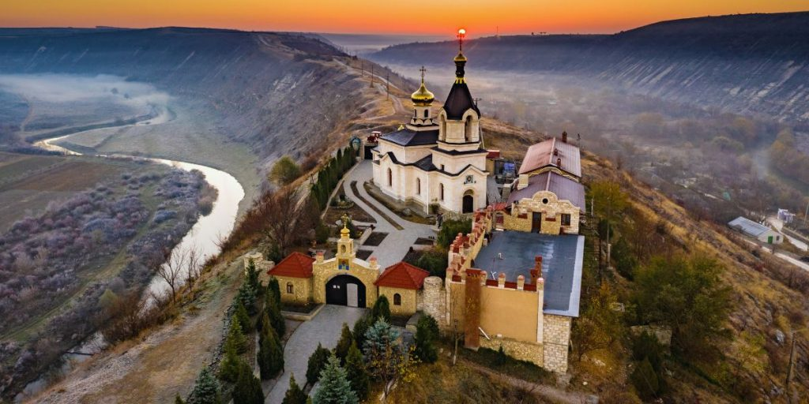
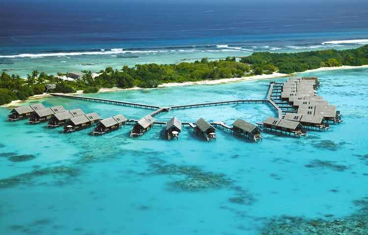

Dubai

O turismo em Dubai oferece uma experiência de luxo e modernidade combinada com tradição no deserto. Com atrações recordistas, a cidade atrai milhões de visitantes, que podem explorar desde o Burj Khalifa, o maior prédio do mundo, até praias paradisíacas e mercados históricos (souks)
US$ 11.500
Turquia

A Turquia é um destino seguro e de alta demanda global, famoso por sua rica história, gastronomia e paisagens únicas. Os principais polos turísticos, como Istambul, Capadócia e a Riviera Turca (Bodrum/Antália), funcionam normalmente e ficam a centenas de quilômetros das áreas de conflito no Oriente Médio.
Preço
India

O turismo na Índia é uma imersão de contrastes, repleta de espiritualidade, história milenar e cores vibrantes. O destino atrai viajantes do mundo todo, desde peregrinos até curiosos que buscam monumentos grandiosos, como o icônico Taj Mahal, e ricas tradições culturais.
Preço
Jamaica

O turismo na Jamaica combina praias paradisíacas de mar azul-turquesa, cachoeiras exuberantes e uma cultura vibrante embalada pelo reggae. Os principais polos turísticos são Montego Bay (centros de resorts), Negril (famosa por Seven Mile Beach e falésias) e Ocho Rios (ecoturismo e natureza)
Moldavia

Tuvalu é um dos países mais remotos do mundo, localizado na Oceania, com uma infraestrutura turística quase inexistente. Recebendo cerca de 1.600 a 3.500 visitantes anuais, oferece uma experiência de desconexão absoluta, natureza intocada e atóis de corais deslumbrantes. O arquipélago é famoso por suas praias e também corre risco de desaparecer devido ao aumento do nível do mar.
Tuvalu

Tuvalu é um dos países mais remotos do mundo, localizado na Oceania, com uma infraestrutura turística quase inexistente. Recebendo cerca de 1.600 a 3.500 visitantes anuais, oferece uma experiência de desconexão absoluta, natureza intocada e atóis de corais deslumbrantes. O arquipélago é famoso por suas praias e também corre risco de desaparecer devido ao aumento do nível do mar.